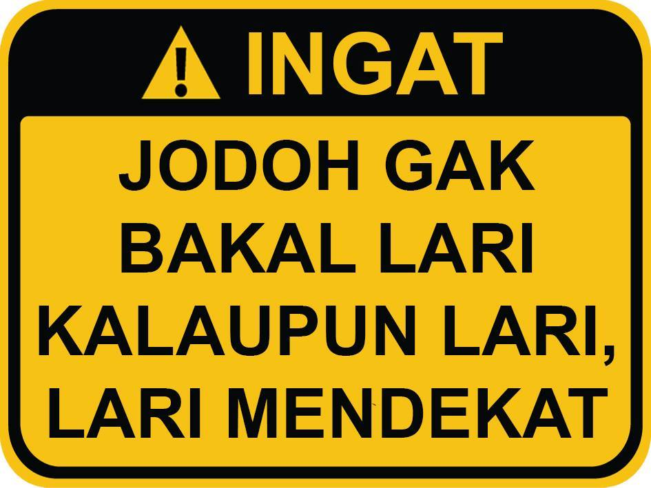

🕌
Bismillah
ALLAHU AKBAR
marilah kita mendekatkan diri kepada allah
monggo

ini adalah jalan menuju surga
INSYAALLAH
surat
ayat
gas baca
Al-Anbiya
89
Al-Anbiya ayat 89
Al-Furqon
74
Al-Furqon ayat 74
TABEL 1 DALIL Al-Qur'an